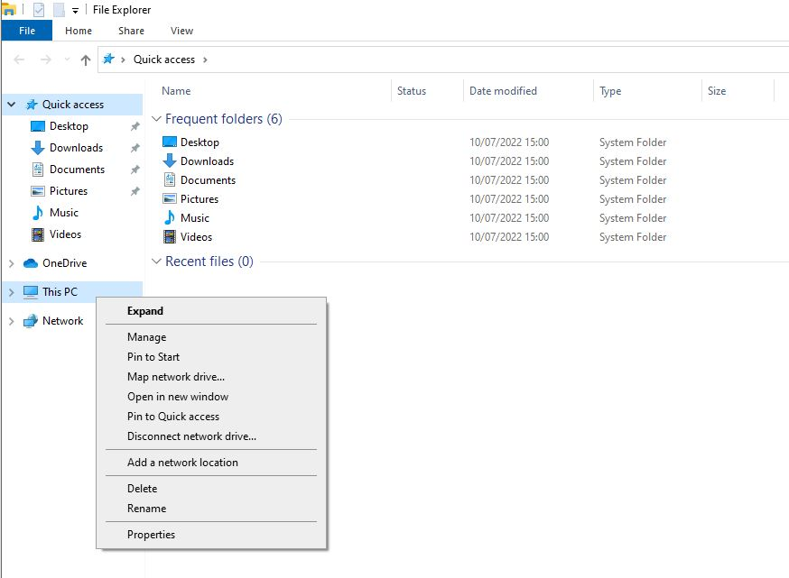
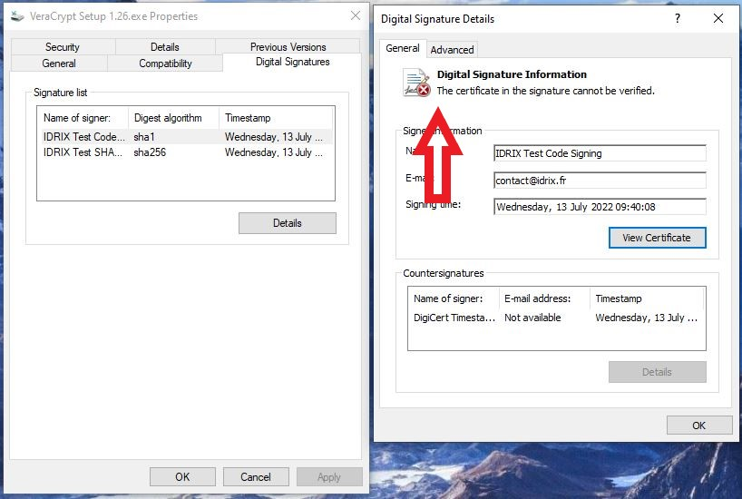

C:\Program Files (x86)\nasm
nasm

C:\Program Files\YASM

变量名：YASMPATH
变量值：C:\Program Files\YASM
yasm
vsyasm

使用Visual Studio 2022和当前WDK编译标准VeraCrypt应用程序二进制文件或Windows驱动程序不需要这些工具。仅当你需要重新构建“src\Boot\Windows”中的旧版BIOS引导加载程序，或者构建包含Boot项目的解决方案配置（例如“ReleaseCustomEFI”）时才安装它们。
nasm
gzip
upx
dd --help
如果已安装上面列出的Visual Studio 2022组件，则可以跳过此步骤。仅在需要不带完整Visual Studio IDE的命令行构建环境时安装Build Tools。
msbuild src\VeraCrypt.sln /m /p:Configuration=Release /p:Platform=x64
msbuild src\VeraCrypt.sln /m /p:Configuration=Release /p:Platform=ARM64
msbuild src\VeraCrypt.sln /m /p:Configuration=Release /p:Platform=Win32
msbuild src\Driver\Driver.vcxproj /m /p:Configuration=Release /p:Platform=x64
msbuild src\Driver\Driver.vcxproj /m /p:Configuration=Release /p:Platform=ARM64
msbuild src\VeraCrypt.sln /m /p:Configuration=ReleaseCustomEFI /p:Platform=x64
msbuild src\VeraCrypt.sln /m /p:Configuration=ReleaseCustomEFI /p:Platform=ARM64
使用sign_test.bat脚本，你刚刚对VeraCrypt可执行文件进行了签名。这是必要的，因为Windows仅接受由签名证书颁发机构信任的驱动程序。
由于你没有使用官方的VeraCrypt签名证书来签署代码，而是使用了公共开发版本，因此你需要导入并信任所使用的证书。

if (!IsOSAtLeast (WIN_10))
return TRUE;
return TRUE;

